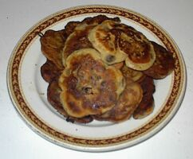

Moussieu l'Editeu,
Hier au sé j'eut des crêpes pour man tais, un signe que la Merrienne tait d'bouonne humeu après s'n'avârie la s'maine pâssée quand, à cause de la grande tempête tchi s'êt-vit soudainement, quand je v'nais d'pendre san linge sûs la ligne, les blankets, les lincheurs, mes qu'minses et plusieurs articlyes du sex féminin dispathutes pour se distribué dans prèsque tous les coins d'la pâraisse.
Heureusement tout n'fut pas pérdu et, ayant ouï d'san malheur, ses filles, tch'y sont toutes mathiées et tch'ont pûs d'avis que d'faithe lûs lavage quand l'temps n'sert pas, sont v'nus à s'n'aide et ach'teu j'ai deux qu'minses ouèsque j'n'en avais qu'yunne et la Merrienne a tout ch'qui l'y faut, et pûs. La seule chose qu'ou r'grétte ch'est sa miyeuthe pathe de cauches et un corset qu'oulle avait accaté pour la vîsite de la Princésse y'a tchique temps eutes la malchance de s'trouvé parmi les grouaissilliers de yun d'nos amins tch'y rest à la Ville Bagot et par conséquent y n'taient bouon que pour le chiquetchi.

J'ai mentionné les crêpes, Moussieu, parsque ch'n'est qu'trais ou quatre fais pas an que la bouonnefemme m'en donne, sachant que je l's'aime hardi. Quand l'vent est dans l'Nord siez nous, chein tchi s'arrive trop souvent, y n'y'a pas d'fricots d'la sorte pour le pouôre Ph'lip.
Après qu'j'eut avalé uner doûzaine ou d'même de ses crêpes, la Merrienne, ayant veu que l's Etats siègent la s'maine tchi veint, m'dit qu'ou tait bein interessie dans l'dernié des sujets tch'y sont pout distchuté, ch'est-à-dithe, le tchéstchon que notre Frainque Le Boutillyi est pour pôsé au Président du Comité d'Agritchultuthe, au sujet des bêtes à la missis Gotel, et des raiponses que l'Député Baal s'en va donné.
"Tchèsque tu crais, Ph'lip," ou d'mandit, "Le Comité pouôrra-t'y s'en dêshallé?"
"Ch'est une tchéstchon que je n'peux pas raipondre," j'l'y dit, "mais si l'Sieur Baal n'a rain d'nouvé à dithe, je crains bein qu'san Comité s'trouv'tha en embarras, car le Sénateur Jack Le Mérquand a l'habitude de t'nin bon quand y crait que l'parti contraithe est dans l'tort, et y n'ya pas d'doute que la mâjorité des férmiers veulent en savé pûs long de ch't'histouaithe-là."
"Mais," ou d'mandit, "si par chance y faudrait trouvé un autre Comité, as-tu autchune idée de tchi membres tch'y voudraient sérvi. A qu'menchi, iou trouvé un autre Président? Y m'semblye que ch'n'est pas une djobbe que j'voudrais si j'tais membre d's'Etats."
"Nan, bein seux, ni mé ni-n'tout," j'ly dit, "car dans chutte djobbe-là nou peut s'faithe seux de pûs d'co-dpîs que de p'tits sous. Mais si l'Clifford Le Vêsconte est prêt à s'y mettre je s'y seux tch'il éthait a confiance de la Chambre, et nou n'peut pas douté sa capacité. Souos les circonstances, y n'éthait autchune peine à formé san Comité, car ch'est un fermyi d'preumié clâsse, et un homme tch'y n'a peux d'rain."
La Merrienne dit qu'ou n'avait pas l'honneu de l'connaître, mais qu'oulle avait tréjous ouï que ch'tait un raide bouon corps. "Et," oulle ajouôtit, "j'ai dans l'idée que ch'est ocquo yun d'mes pathens du bord de man bouonhomme de pèthe. Ch'est tréjous une r'quémendâtion."
"Sans doute," j'l'y dit, "mais si tu continue à trouvé des couôsins dans toutes les pâraisses, j'éthai à m'y mettre étout. J'm'en vais consulté les viers almanachs que j'ai dans l'galtas et je s'sait bein trompé si ma famille ne s'trouve pas mêlée avec les d'Car'trets, les Lemprièthes et les Dumareques, sans pâslé des Pêrrots et les Godfrays."
"Vèthe, sans doute," ou dit, "et n'oublie pas que yun de tes anchètres fut pendu et un autre forbanni pour sa vie. Y'en a d'pûs d'une sorte dans chu mêlange-là, man Ph'lip, et si j'tais té je laiss'sais les almanachs ouèsqu'y sont. Mais pâslant d'autre chose, peux-tu m'dithe pourtchi que l'Comité des Louogements continue à bâti des maisons? J'ai consulté les viers almanachs mé, quand j'ai yeu une heuthe ou deux d'êpeigne et j'ai veu que y'a chent ans y y'avait autant d'monde en Jêrri comme y y'a ach'teu, et pourtant y n'y'avait pas la maintchi tant d'maisons."
"J'n'y connais rain," j'l'y dit, "mais probablyement y couochaient trais ou quatre dans l'même liet. Y'avait mains d'lavage comme chonna."
Ph'lip
12/12/1959
Viyiz étout: